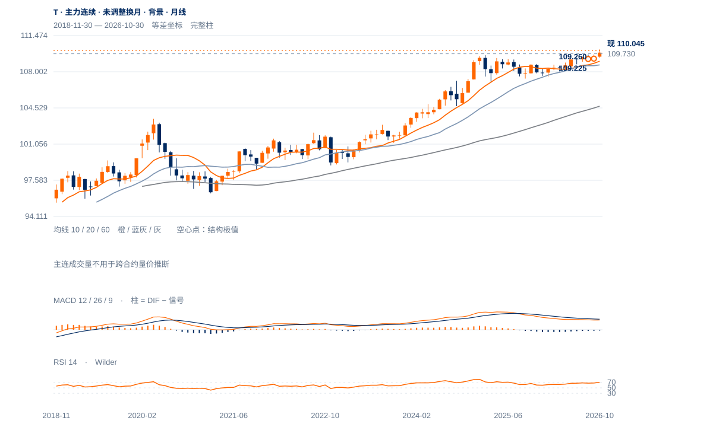
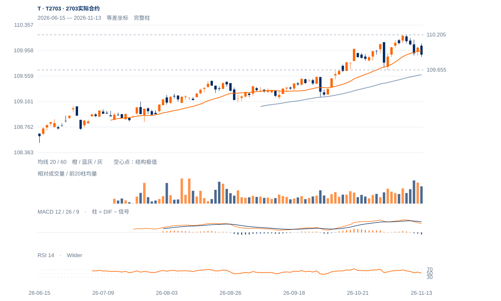

上升背景内回调
109.730上方仍有中期结构依据；日线近端守位反复，110.115—110.140未重夺前暂不提高修复权重。110.005—110.019是下一步最直接的承接检验。
109.730上方仍有中期结构依据；日线近端守位反复，110.115—110.140未重夺前暂不提高修复权重。110.005—110.019是下一步最直接的承接检验。
未来2—6周偏向上升后的整理，T2612以109.730—110.295为结构边界；109.950原连续两日守位规则继续。日收重夺110.140并完成小时保持，才支持再试110.295；日收破109.730则中期修复降级。
未来1—3个月跨越12月合约到期，转看T2703自身结构。现收109.895，60日均衡109.581、11月2日低109.655提供承接参照，110.205是实际前高。守住109.655并形成较高周谷，品种方向仍偏强；连续两周收低109.655且不能回收109.953则转为更大调整，不沿用12月合约绝对价位。

展开图表 ↗T主力历史自2015年起观察，2024—2026总体重心上移，主连10月月收109.84高于10/20月均线109.01/108.66，月RSI70.32反映趋势较强也较拥挤。该序列未经换月调整，只用于品种背景。当前T2612自3月上市，精确关口全部使用实际合约；未借主连跨月高度推算可交易目标。
当前主连周收110.045仍高于10/30周均衡109.7205/109.3202，周RSI65.52；实际T2612从8月109.225、9月109.260抬升到11月109.730，尚未破坏中期较高低点。11月6日110.295高点在13日才完成5日右侧确认；本周回撤是对上升波的测试，而非已确认的长期反转。
实际合约较高低点仍在，109.730是中期结构下沿，110.295是前高。近期按完整小时回收及随后15分钟保持检验买方跟进。
13日收110.045，略高于20日线110.019及60日线109.664；20周线109.479在下方。109.730较高低点及109.780—109.835上升窗口仍保持。
11月6日收110.280至今五日回落0.235点，约回吐前一0.440点收盘升波的53%。幅度已不浅，但109.95连续两日失守和109.730结构失效均未触发。
13日高开后弱收，量比1.36、位置24%；20日ER约0.13，近期净方向效率偏低。原升势并未自动给出短线买方跟进。
先收回110.115—110.140并保持；中期增强仍用原110.295两日上破。
原109.95两日下破则下调，109.730实际失守否定该结构保持。
60分钟与15分钟均未恢复上推，远月增仓也伴随价格回落，长期偏强可能先经历更深调整；若109.730失守，不能以月线强势维持原短线观点。
完整60分钟收110.050，低于20小时均衡110.137，MACD柱仍负；15分钟收110.045，也低于20/60柱均衡110.081/110.109。午后反抽未能恢复主动推进。向上先看完整60分钟收回110.140，随后一个完整15分钟继续保持；向下以110.005日内低点及109.950原两日规则分层判断。
60分钟仅保留完整小时，最后柱至15:00；15:15尾段单列于15分钟图，集合竞价不并入小时确认。
GJJG截至11月12日：较11月6日，T2612减仓52,116手、T2703增仓52,659手，两月合计仅增543手，主要体现持仓迁移；同期分别跌0.165/0.185点，接续合约也未表现出买方价格推进。远月增仓不能直接等同看多。这组持仓数据早于13日价格一个交易日，作为迁移背景使用。
2703实际合约独立价格；1—3个月展望以此合约的高低点与保持条件为准。

展开图表 ↗| 周期 | 最后完整柱 | 图示柱数 | RSI14 | ATR14 | MACD柱 |
|---|---|---|---|---|---|
| 日线 | 2026-11-13 | 164 | 55.07684 | 0.13947 | -0.01501 |
| 周线（主连背景） | 2026-11-13 | 156 | 65.52359 | 0.31037 | 0.03952 |
| 月线（主连背景） | 2026-10-30 | 96 | 70.3219 | 0.87044 | -0.08903 |
国内完整周线至11月13日；11月月线进行中。主连未作换月调整，仅供长期背景；实际合约上市前无数据。